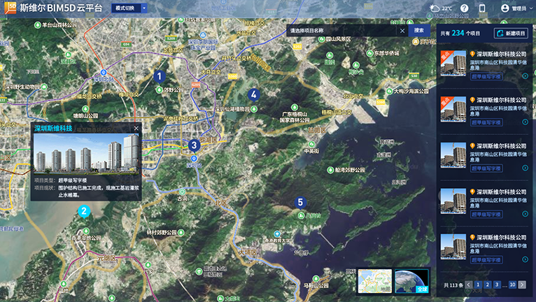
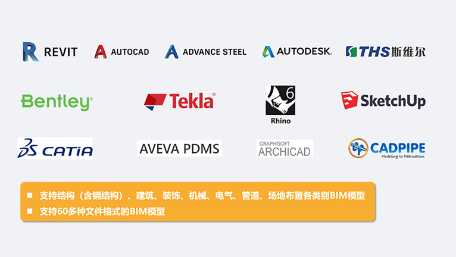

产品架构
BIM5D是基于BIM应用及轻量化技术，实现工程项目全过程的多方协同管理平台。平台采用两端一云的模式（包括WEB端、手机端、云协同及云存储），利用BIM模型的数据集成能力，集成项目全过程资料、进度、质量、安全、设计、成本、物资等信息，并发挥BIM、信息化、云技术的优势，实现项目的可视化、过程化、精细化、规范化、档案化管理，从而达到缩短工期、控制成本、减少设计变更、提升工程质量、预防安全事故、打造项目数字资产的目的。
产品特色点

企业级
企业级管理平台，实现企业项目统一集中管理。
精细管理
进度、成本、质量、安全实现构件级精细化管理。
全过程管理
实现项目建设全过程的多方协同管理。
数字资产
完工后，形成项目数字资产，为后期运维提供便利。
使用成本低
平台使用，在支持购买永久使用权的情况下，也支持年租模式，降低企业使用成本。
方案架构
产品采用WEB端+移动端（手机APP）架构。WEB有无需安装客户端程序，任意一台电脑打开浏览器即可使用；无需更新，打开即是最新版本；跨平台运行，Windows、OS、Linux都可运行；大量计算工作由服务器承担，降低对客户电脑性能要求的优势。移动端（手机APP）实现项目现场、出差移动办公的多场景办公需要。

BIM模型支持
支持结构（含钢结构）、建筑、装饰、机械、电气、管道、场地布置各类别BIM模型。同时，支持Revit、AutoCAD、Bentley、Tekla、Rhino、Catia、ArchiCAD等，共60多种文件格式的BIM模型。
模型轻量化
上传平台模型自动进行轻量化，浏览器或手机APP即可浏览模型。Revit模型，构件族、属性参数、材质100%保留，真正实现BIM模型无损轻量化。
模型浏览（空间漫游）
采用轻量化模型引擎，仿真度高、浏览流畅，支持模型动态观察、空间漫游、截面分析、模型分解、测量、标记、构件筛选、自定义着色。
开放性
支持对接现场监测设备、视频监控等物联网对接，实时了解现场状态。支持第三系统对接与二次开发（如ERP系统、OA办公系统）。